7단계 역전파 자동화
이전 단계에서 역전파를 동작시키는 데 성공했습니다. 그러나 역전파 계산 코드를 수동으로 조합해야 했습니다. 새로운 계산을 할 때마다 역전파 코드를 직접 작성해야 한다는 뜻이죠.
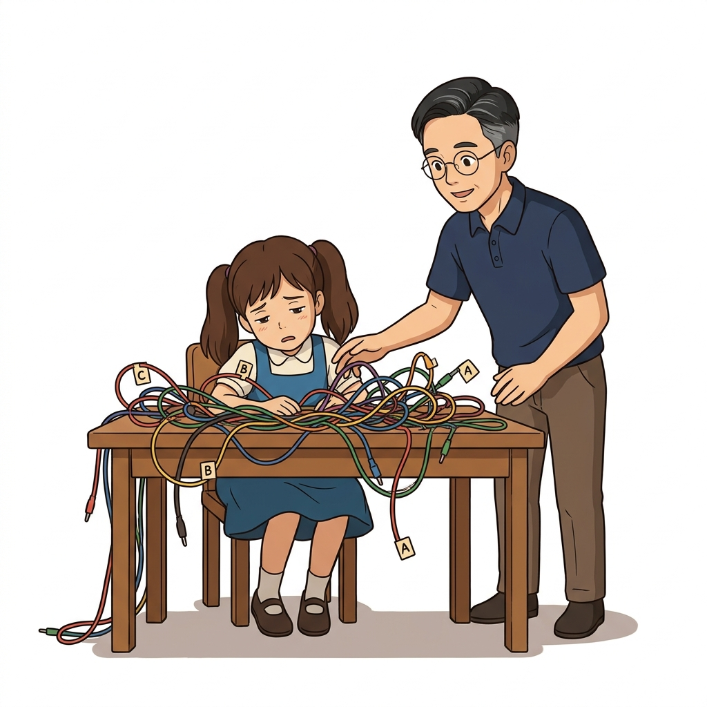
그림 7-1: 수동으로 연결하기 번거로운 역전파 호출을 자동화하려는 이유[그림 7-1]처럼 계산 그래프가 여러 개라면 각각의 계산에 맞게 역전파 코드를 수동으로 따로따로 작성해야 합니다.
그러다 보면 실수가 생길 수 있고, 무엇보다도 지루할 것입니다.
그림 7-1 다양한 계산 그래프(변수명은 생략하고 함수명은 클래스 이름으로 대신함)
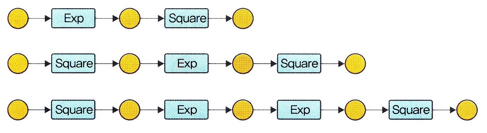
지루한 일은 파이썬에게 시키자고요!
그래서 이제부터 역전파를 자동화하려 합니다. 더 정확히 말하면, 일반적인 계산(순전파)을 한 번만 해주면 어떤 계산이라도 상관없이 역전파가 자동으로 이루어지는 구조를 만들 것입니다. 두둥! 지금부터가 바로 Define-by-Run의 핵심을 건드리는 내용입니다!
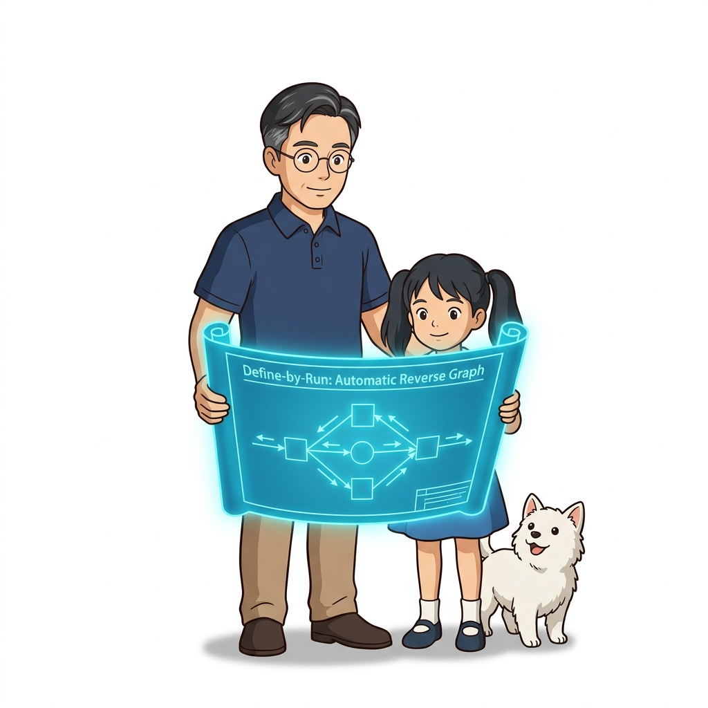
그림 7-2: 순전파를 실행하는 순간 동적으로 계산 그래프를 연결하는 Define-by-RunNOTE
Define-by-Run이란 딥러닝에서 수행하는 계산들을 계산 시점에 ‘연결’하는 방식으로, ‘동적 계산 그래프’라고도 합니다. Define-by-Run의 개념과 장점은 제2고지 마지막의 ‘칼럼: Define-by-Run’에서 자세히 설명합니다.
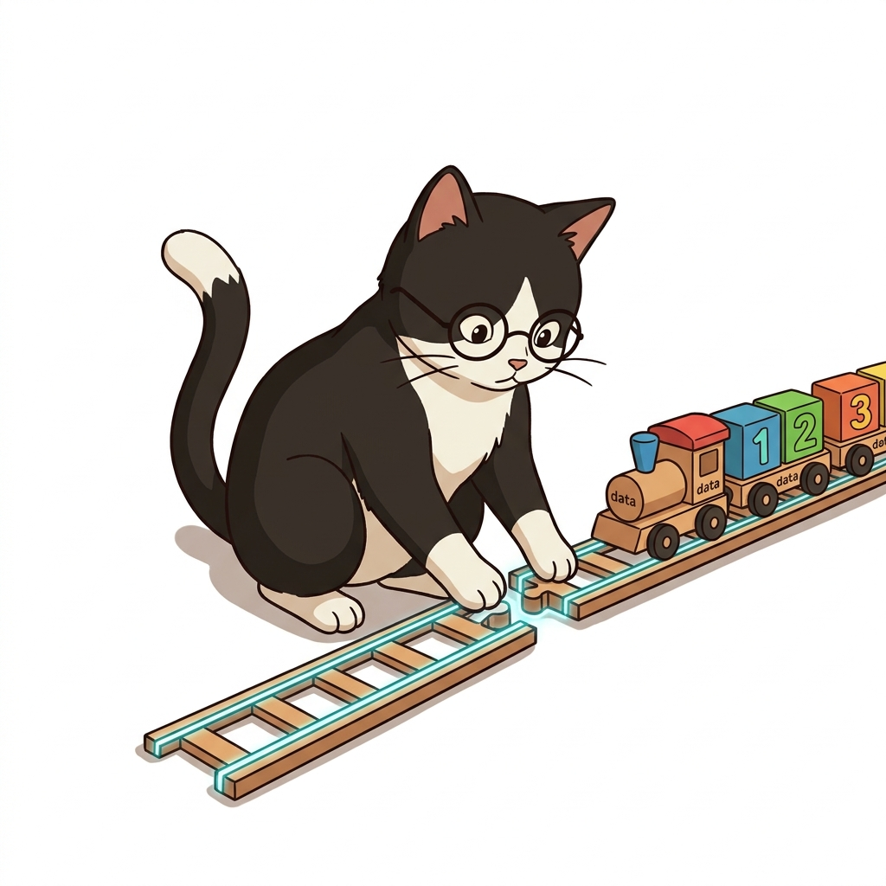
그림 7-3: 실제 연산이 일어나는 런타임에 유연하게 조립되는 동적 그래프 메커니즘그런데 [그림 7-1]의 계산 그래프들은 모두 일직선으로 늘어선 계산입니다.
따라서 함수의 순서를 리스트 형태로 저장해두면 나중에 거꾸로 추적하는 식으로 역전파를 자동화할 수 있습니다.
그림 7-4: 분기 없이 일렬로 순차 연결된 선형 계산 그래프의 특징
그러나 분기가 있는 계산 그래프나 같은 변수가 여러 번 사용되는 복잡한 계산 그래프는 단순히 리스트로 저장하는 식으로는 풀 수 없습니다.
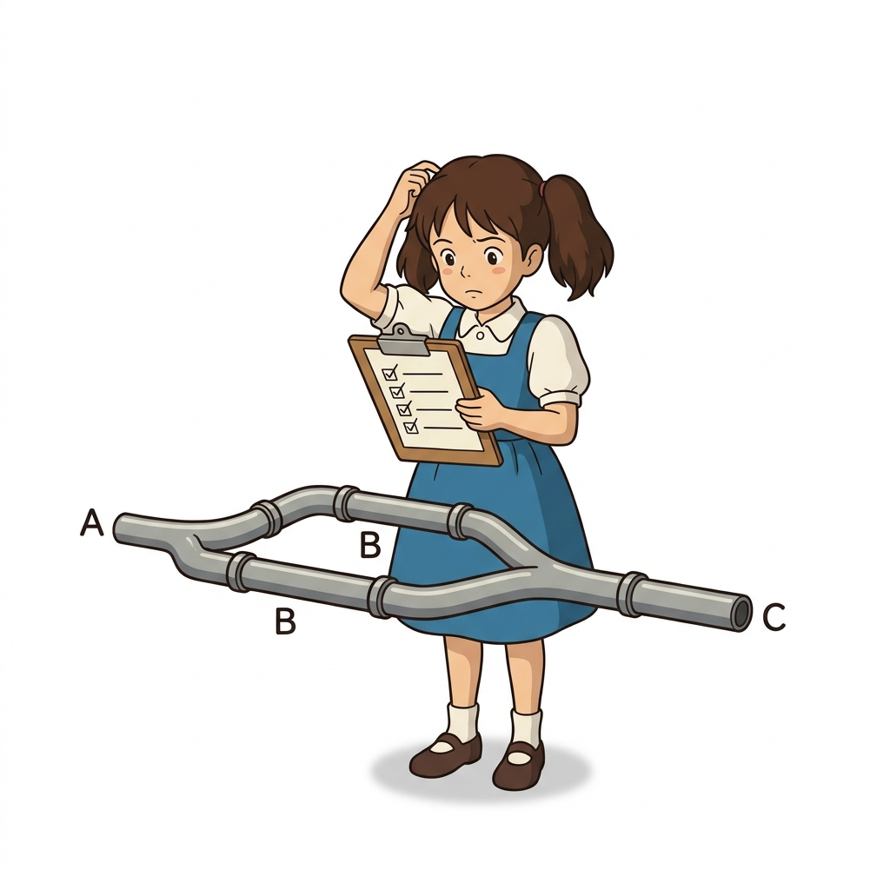
그림 7-5: 복잡한 분기와 재사용이 발생하는 그래프에서는 단순 리스트로 해결할 수 없음우리 목표는 아무리 복잡한 계산 그래프라 하더라도 역전파를 자동으로 할 수 있는 구조를 마련하는 것입니다.
CAUTION
사실 리스트 데이터 구조를 응용하면 수행한 계산을 리스트에 추가해 나가는 것만으로 어떠한 계산 그래프의 역전파도 제대로 해낼 수 있습니다. 이 데이터 구조를 웬거트 리스트Wengert List(혹은 테이프tape)라고 합니다. 이 교제에서는 웬거트 리스트에 대한 설명은 하지 않으니 관심 있는 분은 참고문헌 [2]와 [3]을 참고하시고, 웬거트 리스트를 활용하는 Define-by-Run의 장점은 참고문헌 [4]를 참고해주세요.
그림 7-6: 연산 순서를 테이프에 기록하듯 관리하는 웬거트 리스트(Wengert List)
7.1 역전파 자동화의 시작
역전파 자동화로 가는 길은 변수와 함수의 ‘관계’를 이해하는 데서 출발합니다. 우선 함수 관점에서 ‘함수는 변수를 어떻게 바라볼까’를 생각해봅시다.
그림 7-7: Function은 입력 변수를 받아 새로운 출력 변수를 생성한다
함수 입장에서 변수는 ‘입력’과 ‘출력’에 쓰입니다.
즉, [그림 7-2]의 왼쪽과 같이 함수에게 변수는 ‘입력 변수(input)’와 ‘출력 변수(output)’로서 존재합니다(그림의 점선은 참조reference를 뜻합니다).
그림 7-2 함수 입장에서 본 변수와의 관계(왼쪽)와 변수 입장에서 본 함수와의 관계(오른쪽)
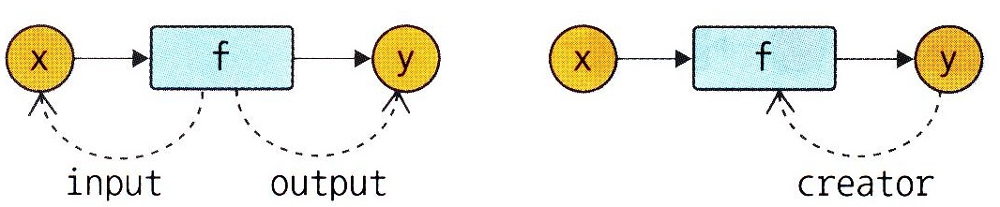
변수 관점에서 함수는 어떤 존재일까요?
여기서 눈여겨볼 점은 변수는 함수에 의해 ‘만들어진다’라는 것입니다. 즉, 변수에게 있어 함수는 ‘창조자creator’ 혹은 ‘부모’입니다. 창조자인 함수가 존재하지 않는 변수는 함수 이외의 존재, 예컨대 사용자에 의해 만들어진 변수로 간주됩니다.
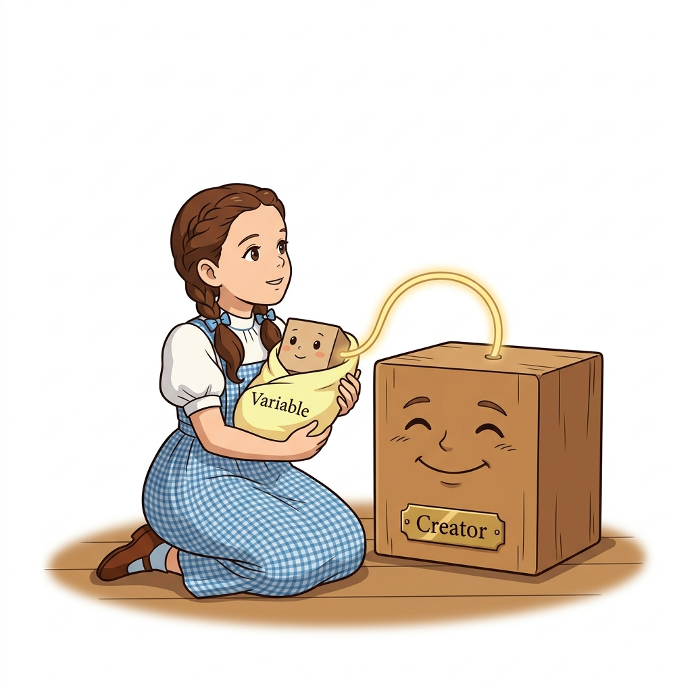
그림 7-8: 변수에게 있어 함수는 자신을 만들어낸 창조자(creator/부모)이다일단 [그림 7-2]와 같은 함수와 변수의 관계를 DeZero 코드에 녹여볼까요?
여기서는 일반적인 계산(순전파)이 이루어지는 시점에 ‘관계’를 맺어주도록(즉, 함수와 변수를 연결 짓도록) 만들겠습니다.
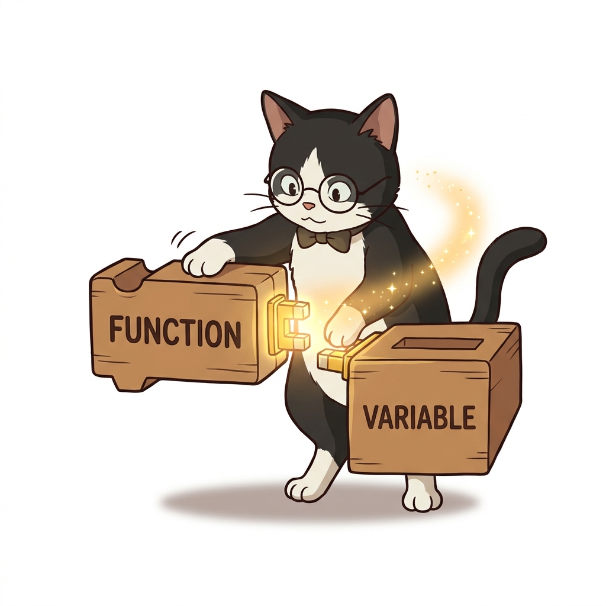
그림 7-9: 순전파 계산이 일어나는 순간 변수에 창조자 링크를 동적으로 연결이를 위해 우선 Variable 클래스에 다음 코드를 추가합니다.
steps/step07.py
class Variable:
def __init__(self, data):
self.data = data
self.grad = None
self.creator = None
def set_creator(self, func):
self.creator = func
creator라는 인스턴스 변수를 추가했습니다. 그리고 creator를 설정할 수 있도록 set_creator 메서드도 추가합니다.
이어서 Function 클래스에 다음 코드를 추가합니다.
steps/step07.py
class Function:
def __call__(self, input):
x = input.data
y = self.forward(x)
output = Variable(y)
output.set_creator(self) # 출력 변수에 창조자를 설정한다.
self.input = input
self.output = output # 출력도 저장한다.
return output
순전파를 계산하면 그 결과로 output이라는 Variable 인스턴스가 생성됩니다. 이때 생성된 output에 ‘내가 너의 창조자임’을 기억시킵니다. 이 부분이 ‘연결’을 동적으로 만드는 기법의 핵심입니다. 그런 다음 앞으로를 위해 output을 인스턴스 변수에 저장했습니다.
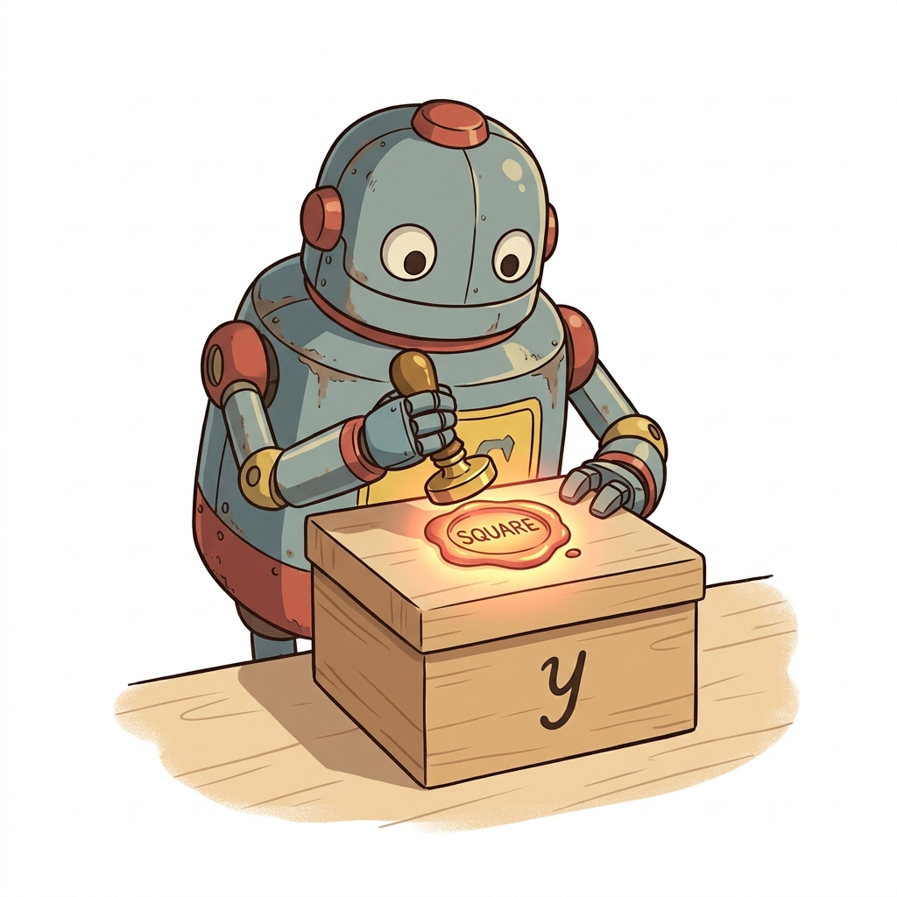
그림 7-10: 생성된 출력 변수에 자신(함수)을 창조자로 각인시키는 연결 기법NOTE
DeZero의 동적 계산 그래프Dynamic Computational Graph는 실제 계산이 이루어질 때 변수(상자)에 관련 ‘연결’을 기록하는 방식으로 만들어집니다. 체이너와 파이토치의 방식도 이와 비슷합니다.
그림 7-11: 현대 딥러닝 프레임워크의 근간이 된 Define-by-Run 철학
이와 같이 ‘연결’된 Variable과 Function이 있다면 계산 그래프를 거꾸로 거슬러 올라갈 수 있습니다.
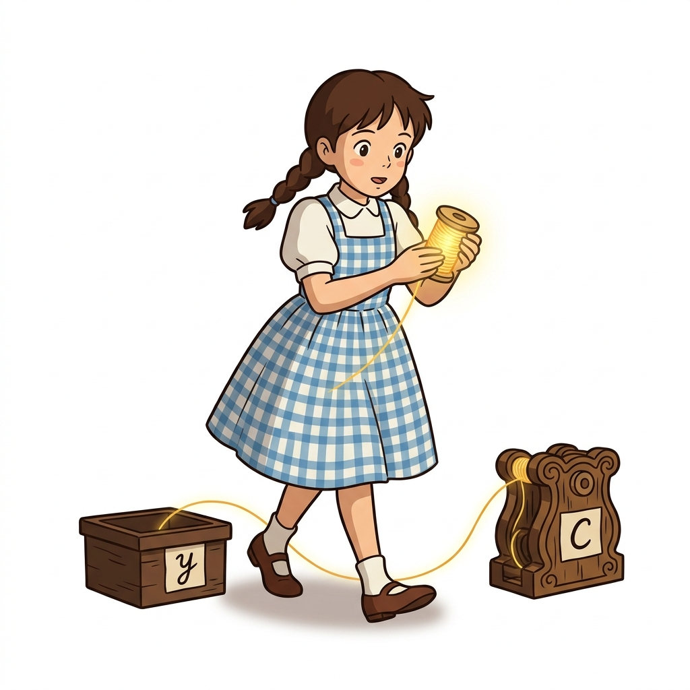
그림 7-12: 출력 y에서 creator를 추적하여 이전 함수와 입력 변수로 이동하는 역방향 탐색구체적인 코드로 나타내면 다음과 같습니다.
A = Square()
B = Exp()
C = Square()
x = Variable(np.array(0.5))
a = A(x)
b = B(a)
y = C(b)
# 계산 그래프의 노드들을 거꾸로 거슬러 올라간다.
assert y.creator == C
assert y.creator.input == b
assert y.creator.input.creator == B
assert y.creator.input.creator.input == a
assert y.creator.input.creator.input.creator == A
assert y.creator.input.creator.input.creator.input == x
우선 assert 문이 무엇인지 설명해야겠네요.
먼저 ‘assert’는 우리말로 ‘단호하게 주장하다’, ‘단언하다’라는 뜻입니다. assert 문은 assert ... 형태로 사용합니다. 여기서 ... 부분이 ‘주장’에 해당하는 내용으로, 그 평가 결과가 True가 아니면 예외가 발생합니다. 따라서 assert 문은 조건을 충족하는지 여부를 확인하는 데 사용할 수 있습니다. 참고로 앞의 코드는 문제없이(예외가 발생하지 않고) 실행되므로 assert 문의 조건을 모두 충족함을 알 수 있습니다.
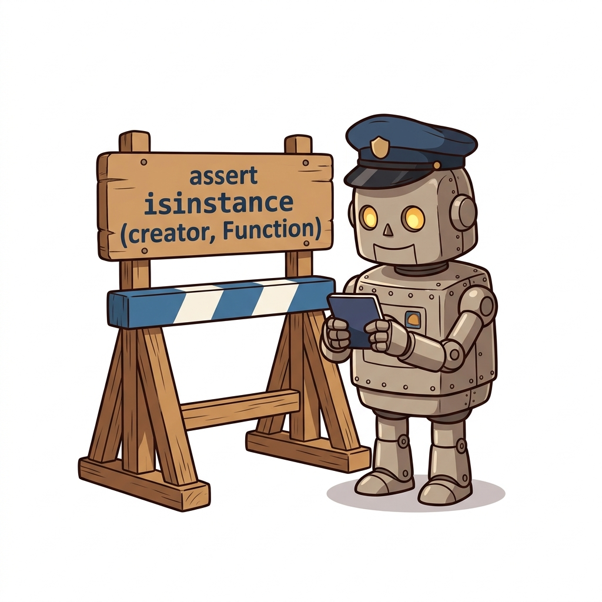
그림 7-13: 연결된 creator가 Function 인스턴스인지 엄격하게 검증하는 assert 문앞의 코드가 보여주듯 Variable의 인스턴스 변수 creator에서 바로 앞의 Function으로 건너갑니다. 그리고 그 Function의 인스턴스 변수 input에서 다시 하나 더 앞의 Variable로 건너가죠.
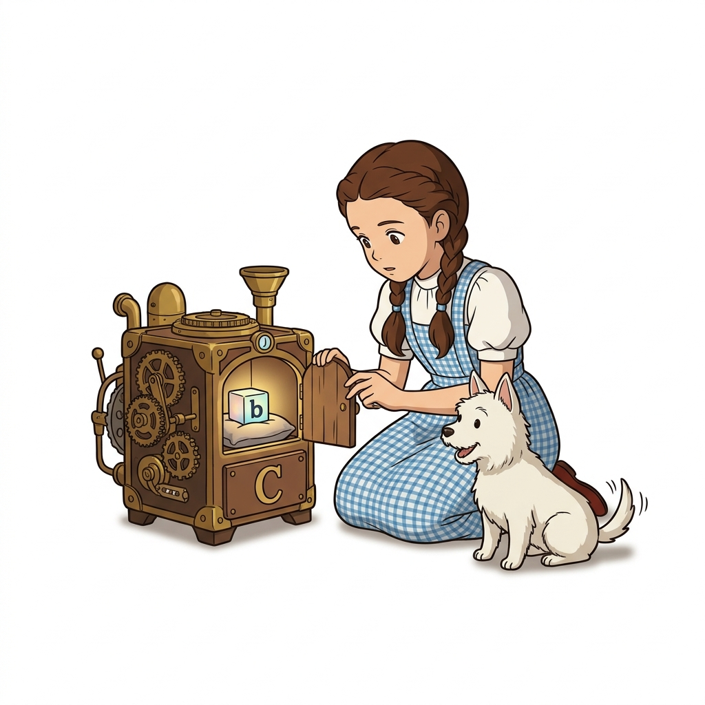
그림 7-14: 창조자 함수의 input 변수로부터 역전파에 필요한 입력값을 손쉽게 접근[그림 7-3]은 이 관계를 잘 보여줍니다.
그림 7-3 계산 그래프 역추적($y$ 에서 시작)
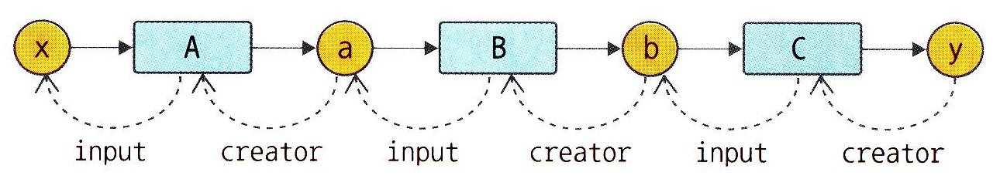
[그림 7-3]과 같이 우리 계산 그래프는 함수와 변수 사이의 연결로 구성됩니다. 그리고 중요한 점은 이 ‘연결’이 실제로 계산을 수행하는 시점에 (순전파로 데이터를 흘려보낼 때) 만들어진다는 것입니다. 이러한 특성에 이름을 붙인 것이 Define-by-Run입니다. 데이터를 흘려보냄으로써(Run함으로써) 연결이 규정된다는(Define된다는) 뜻입니다.
또한 [그림 7-3]과 같이 노드들의 연결로 이루어진 데이터 구조를 ‘링크드 리스트linked list‘라고 합니다. 노드는 그래프를 구성하는 요소이며, 링크link는 다른 노드를 가리키는 참조를 뜻합니다. 결국 우리는 ‘링크드 리스트’라는 데이터 구조를 이용해 계산 그래프를 표현하고 있는 것입니다.
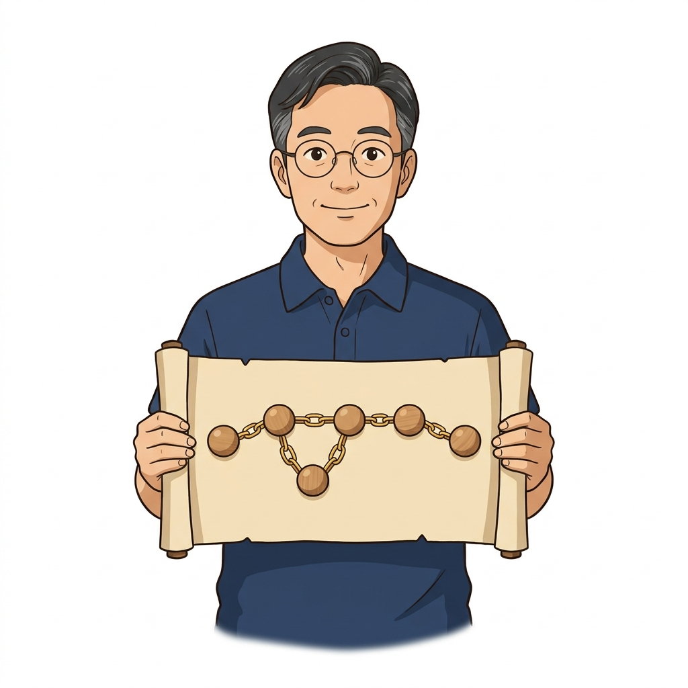
그림 7-15: 노드와 참조 링크로 유연하게 연결된 DeZero의 링크드 리스트 계산 그래프7.2 역전파 도전!
변수와 함수의 관계를 이용하여 역전파를 시도해보겠습니다. 우선 $y$ 에서 $b$ 까지의 역전파를 시도해보죠.
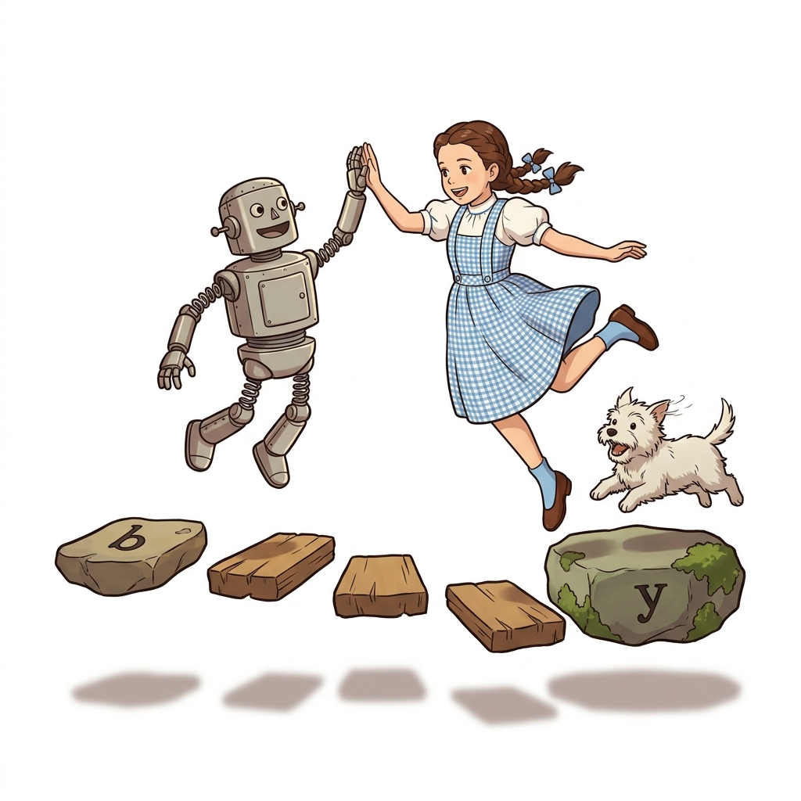
그림 7-16: 관계 링크를 활용해 출력 y에서 중간 변수 b로 역전파를 수행하는 첫 걸음이 부분은 다음과 같이 구현할 수 있습니다.
y.grad = np.array(1.0)
C = y.creator # 1. 함수를 가져온다.
b = C.input # 2. 함수의 입력을 가져온다.
b.grad = C.backward(y.grad) # 3. 함수의 backward 메서드를 호출한다.
$y$ 의 인스턴스 변수 creator에서 함수를 얻어오고, 그 함수의 input에서 입력 변수를 가져왔습니다. 그런 다음 함수의 backward 메서드를 호출합니다.
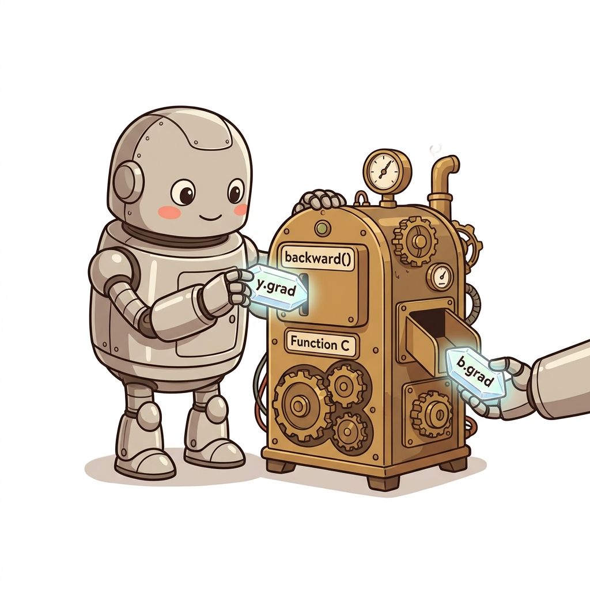
그림 7-17: 창조자 함수의 backward(y.grad)를 호출하여 b의 기울기를 획득—이어서 변수 $b$ 에서 $a$ 로의 역전파를 보겠습니다.
B = b.creator # 1. 함수를 가져온다.
a = B.input # 2. 함수의 입력을 가져온다.
a.grad = B.backward(b.grad) # 3. 함수의 backward 메서드를 호출한다.
똑같은 흐름입니다.
그림 7-18: 동일한 패턴으로 b의 creator를 얻어 a의 기울기를 계산하는 연속성
구체적으로 다음과 같은 순서로 진행됩니다.
- 함수를 가져온다.
- 함수의 입력을 가져온다.
- 함수의
backward메서드를 호출한다.
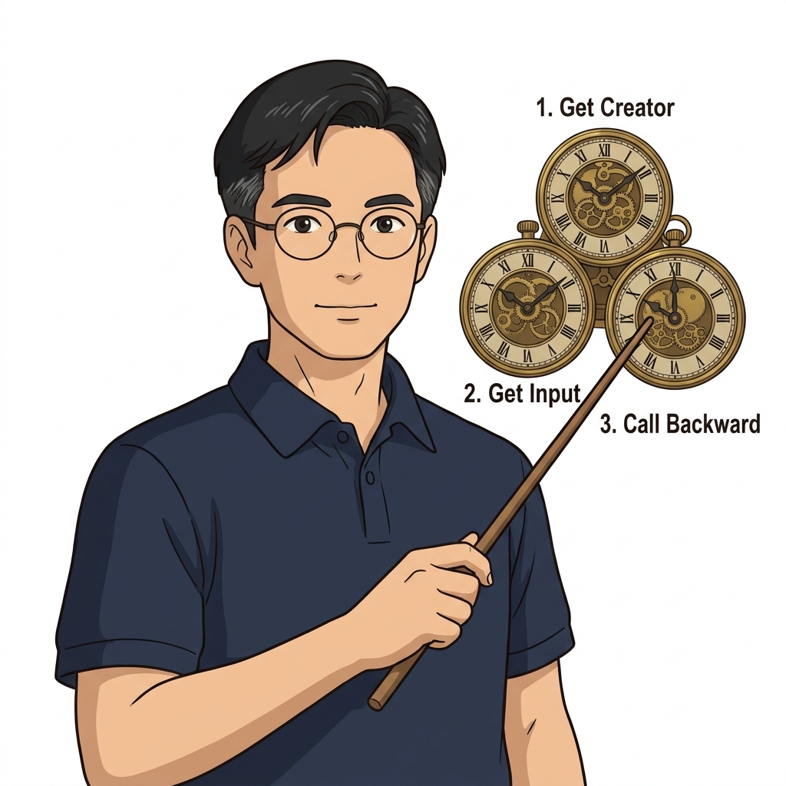
그림 7-19: 1. 함수 가져오기 -> 2. 입력 가져오기 -> 3. backward 호출의 3단계 자동화 패턴마지막으로 변수 $a$ 에서 $x$ 로의 역전파까지 진행합니다.
A = a.creator # 1. 함수를 가져온다.
x = A.input # 2. 함수의 입력을 가져온다.
x.grad = A.backward(a.grad) # 3. 함수의 backward 메서드를 호출한다.
print(x.grad)
실행 결과
3.297442541400256
이상으로 모든 역전파가 끝났습니다.
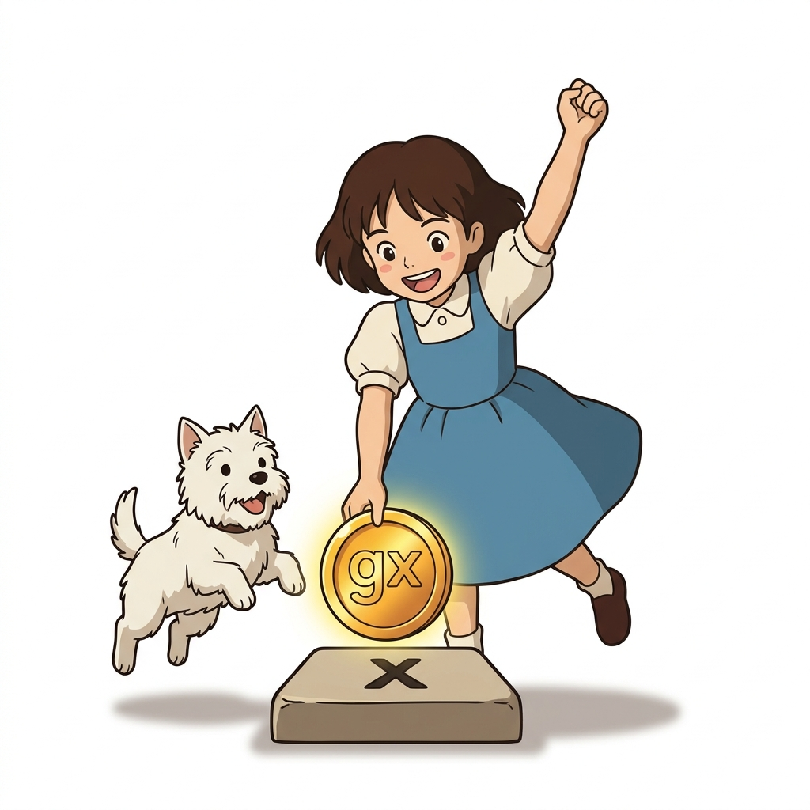
그림 7-20: 출발점인 입력 x까지 성공적으로 도달하여 모든 기울기를 완성7.3 backward 메서드 추가
방금 보여드린 역전파 코드에는 똑같은 처리 흐름이 반복해서 나타났습니다. 변수에서 하나 앞의 변수로 거슬러 올라가는 로직이 그러했습니다. 그러므로 이 반복 작업을 자동화할 수 있도록 Variable 클래스에 backward라는 새로운 메서드를 추가하겠습니다.
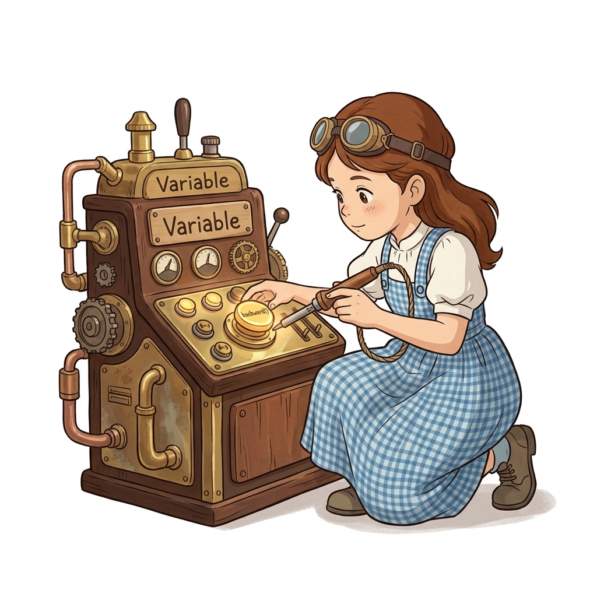
그림 7-21: 수동 루프를 캡슐화하여 Variable 자체에 backward 메서드를 장착steps/step07.py
class Variable:
def __init__(self, data):
self.data = data
self.grad = None
self.creator = None
def set_creator(self, func):
self.creator = func
def backward(self):
f = self.creator # 1. 함수를 가져온다.
if f is not None:
x = f.input # 2. 함수의 입력을 가져온다.
x.grad = f.backward(self.grad) # 3. 함수의 backward 메서드를 호출한다.
x.backward() # 하나 앞 변수의 backward 메서드를 호출한다(재귀).
backward 메서드는 지금까지 반복한 처리 흐름과 거의 동일합니다. Variable의 creator에서 함수를 얻어오고, 그 함수의 입력 변수를 가져옵니다. 그런 다음 함수의 backward 메서드를 호출합니다. 마지막으로 자신보다 하나 앞에 놓인 변수의 backward 메서드를 호출합니다. 이런 식으로 각 변수의 backward 메서드가 재귀적으로 불리게 됩니다.
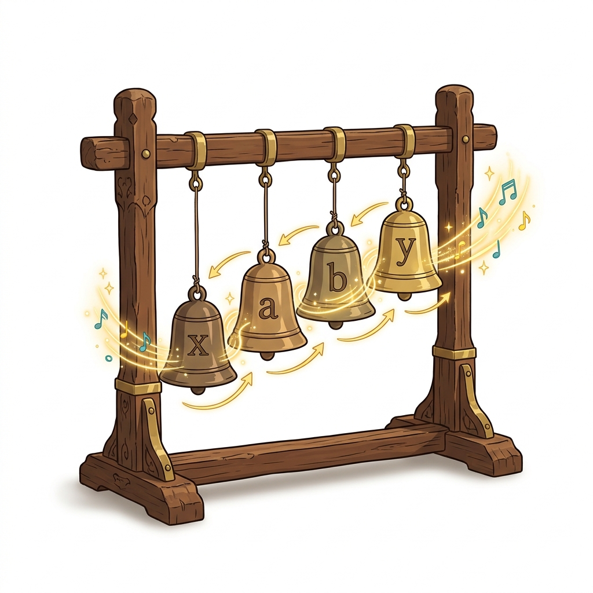
그림 7-22: y.backward() 호출 하나로 앞선 변수들의 backward가 연쇄적으로 불리는 재귀 구조NOTE
Variable 인스턴스의creator가None이면 역전파가 중단됩니다. 창조자가 없으므로 이 Variable 인스턴스는 함수 바깥에서 생성됐음을 뜻합니다(높은 확률로 사용자가 만들어 건넨 변수일 것입니다).
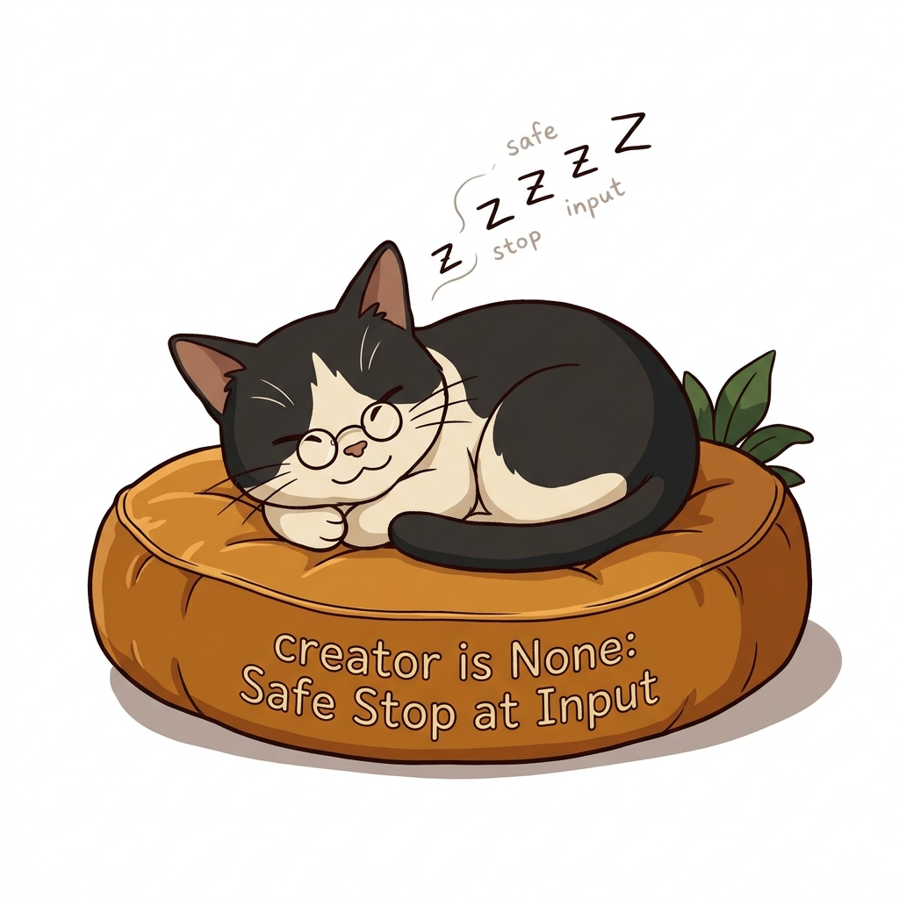
그림 7-23: 사용자가 직접 생성한 입력 변수에 도달하면(creator=None) 안전하게 역전파 종료이제 새로워진 Variable을 이용하여 역전파가 자동으로 실행되는 모습을 보겠습니다.
steps/step07.py
A = Square()
B = Exp()
C = Square()
x = Variable(np.array(0.5))
a = A(x)
b = B(a)
y = C(b)
# 역전파
y.grad = np.array(1.0)
y.backward()
print(x.grad)
실행 결과
3.297442541400256
이와 같이 변수 $y$ 의 backward 메서드를 호출하면 역전파가 자동으로 진행됩니다. 실행 결과도 지금까지와 동일합니다. 축하합니다! 여러분은 방금 DeZero에서 가장 중요한 개념인 자동 미분의 기초를 완성했습니다.
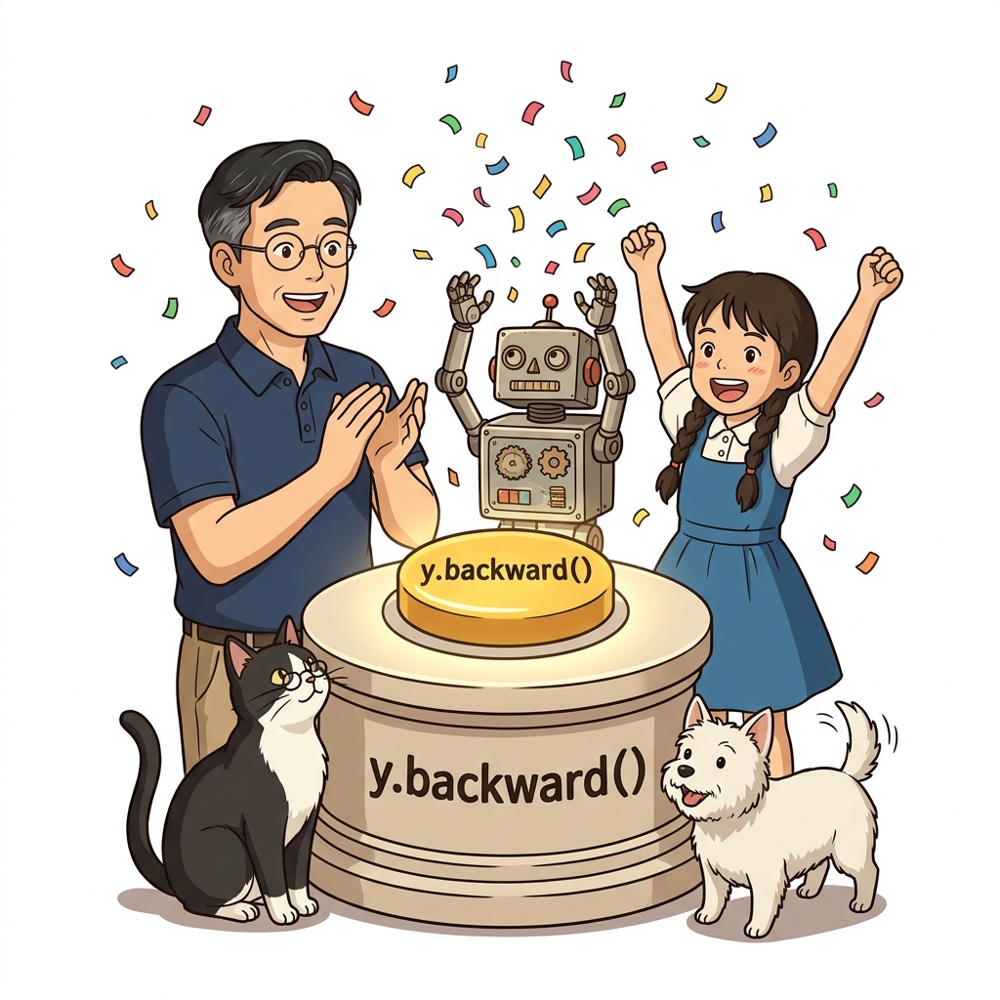
그림 7-24: 단 한 줄의 코드로 전체 미분이 자동 계산되는 Define-by-Run DeZero의 완성